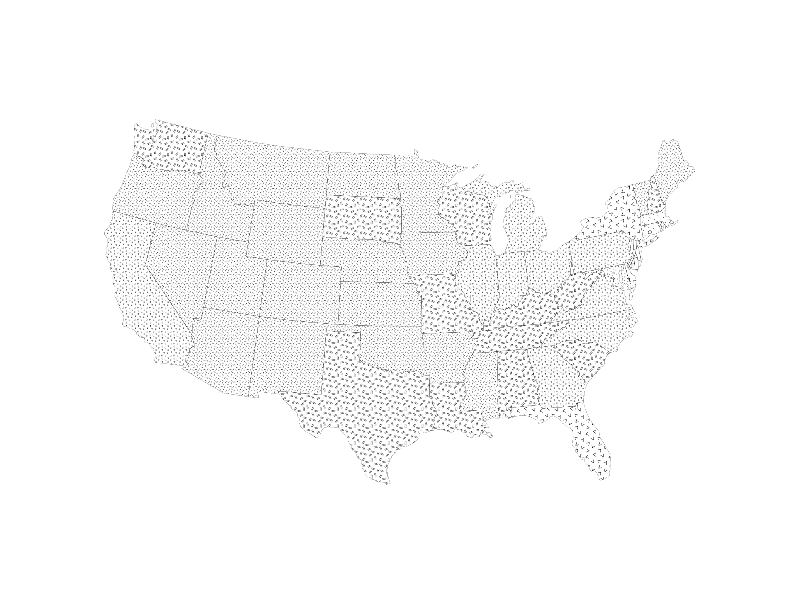

MakiePatterns.jl#
A Julia package for using raster pattern fills with Makie plotting, particularly useful for creating choropleth maps with pattern-based classifications instead of color gradients. The native Pattern type supports only /, \, -, |, x, and +.
Features#
471 Built-in Patterns: Ships with a comprehensive collection of geologic/cartographic patterns used by the U.S. Geological Service
User patterns can be added from PNG files
Auto-registration: Patterns are automatically discovered and registered at module load time
Efficient Caching: Loaded patterns are cached to avoid repeated file I/O
Flexible Scaling: Control pattern size via downsample factors
Convenient API: Simple functions for single or multi-pattern plots
Choropleth Support:
patternpoly!function for easy bin-based pattern mapping
Installation#
using Pkg
Pkg.add("MakiePatterns")Or for development:
using Pkg
Pkg.develop(path="/path/to/MakiePatterns.jl")Quick Start#
using MakiePatterns
using GeoMakie, CairoMakie
# See all available patterns
patterns = available_patterns()
# [:p101_C, :p101_DO, :p101_K, :p101_M, :p102_C, ...]
# Create a single pattern
pat = pattern(:p101_C)
# Use in a plot
f = Figure()
ax = Axis(f[1, 1])
poly!(ax, some_geometry; color=pat, strokewidth=0.5)Demo#
Example of pattern-filled choropleth map using MakiePatterns:
using CairoMakie
using DataFrames
using Downloads
using GeoDataFrames
using GeoMakie
using MakiePatterns
url = "https://juliamapping.com/addn/geojson_example.json"
tmp = Downloads.download(url)
gdf = GeoDataFrames.read(tmp) # auto-detects GeoJSON
gdf.bins = [2, 1, 1, 1, 3, 1, 6, 4, 8, 4, 3, 3, 1, 3, 3, 1, 1, 2, 2, 1, 5, 6, 3, 1, 1, 2, 1, 1, 1, 2, 7, 1, 4, 3, 1, 3, 1, 1, 3, 7, 2, 2, 2, 2, 1, 1, 3, 2, 2, 2, 1, 0]
gdf = subset(gdf, :name => ByRow(x -> x ∉ ["Alaska", "Hawaii", "Puerto Rico"]))
# Create figure
f = Figure(size=(3200, 2400))
ga = GeoAxis(f[1, 1]; dest="EPSG:5070")
hidedecorations!(ga)
# Use different downsample factors for different bins
# Smaller factors = larger patterns, larger factors = smaller patterns
patternpoly!(ga, gdf.geometry, gdf.bins;
patterns=[:p313_K, :p315_K, :p317_K, :p319_K, :p601, :p605, :p632, :p634, :p636],
factors=[6, 6, 6, 6, 4, 4, 4, 4, 4],
strokewidth=0.5)
f
Pattern Naming Convention#
Patterns are automatically named based on their filename:
Files starting with digits get a
pprefix:701.png→:p701Files with descriptive names keep them:
hatch_dense.png→:hatch_denseHyphens and whitespace are converted to underscores:
101-C.png→:p101_C
Controlling Pattern Scale#
The downsample factor controls how large patterns appear:
Larger factors → smaller patterns (more repetitions)
Smaller factors → larger patterns (fewer repetitions)
# Small pattern (more tiles)
pat_small = pattern(:p101_C; factor=10)
# Large pattern (fewer tiles)
pat_large = pattern(:p101_C; factor=2)
# Use default factor from patterns.toml
pat_default = pattern(:p101_C)Pattern Sources#
Pattern assets are derived from the Federal Geographic Data Committee Digital Cartographic Standard for Geologic Map Symbolization by way of Daven Quinn's github repo under a Creative Commons CC0 License. A pattern chart can be found here.